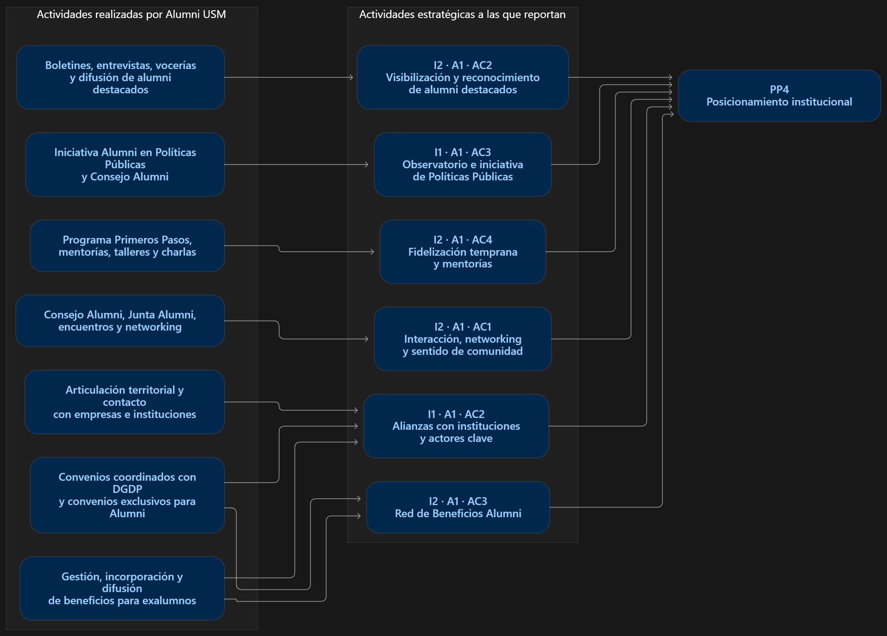

Diagrama base
Referencia principal

Selecciona una caja para iluminar únicamente su ruta de contribución.
Alumni USM · Trazabilidad PEI
Actividades realizadas → actividades estratégicas → Programa Prioritario

Selecciona una caja para iluminar únicamente su ruta de contribución.